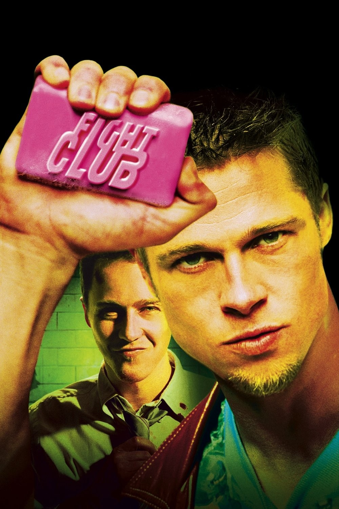
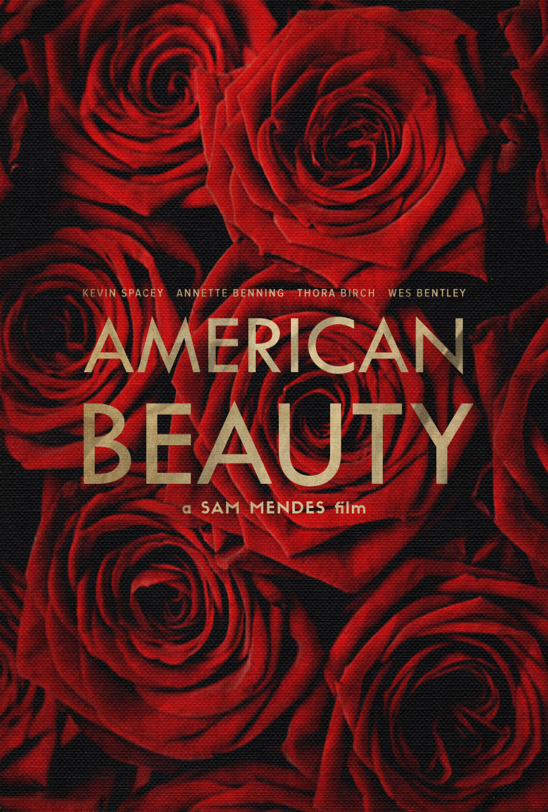
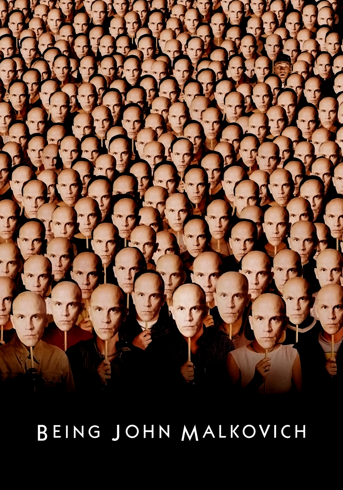

to many future contemporary cinematic classics. One of the best known films from the decade,
Pulp Fiction, was written and directed by future legendary film director Quentin Tarantino.
The film was known for its multiple intertwined story lines and non-linear storytelling.
The film ended up winning the Oscar for Best Original Screenplay. However, that wasn’t the
only film Tarantino released in the decade, he also dropped his first feature in 1992,
Reservoir Dogs. While it shared similar violence and views as Pulp Fiction, Reservoir Dogs
was a much more traditional heist film.

David Fincher, another very well known director nowadays, also dropped a pair of very well made
films. First Se7en in 1995, and then Fight Club in 1999. Se7en features a pair of detectives
tracking down an infamous serial killer, while Fight Club followed a main characters whose life
turns upside down when he meets a new friend and ends up creating an anarchist cult.

Another well known movie from the 90’s was American Beauty, released in 1990 it’s main character Lester Burnham
suffers a midlife crisis. The film was incredibly successful, going on to win Best Picture, Best Actor, Best Director,
Best Original Screenplay, and Best Cinematography.

One could also list Goodfellas, Groundhog Day, Being John Malkovich, and Heat
as highlights. All of these films are very well made, and they cover a range of topics,
not just focusing on one genre of film.

Sources: